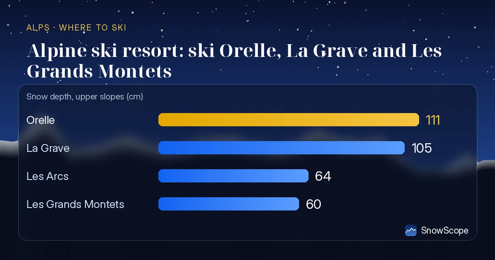

Alpine ski resort: ski Orelle, La Grave and Les Grands Montets
This weekend, three Alpine resorts stand out for depth and incoming snow. Orelle holds the most—111 cm on upper slopes—with La Grave at 105 cm and Les Grands Montets at 60 cm. A strong storm arrives Thursday through Saturday, adding 100+ cm at the highest elevations and shifting snow from scarce to skiable across the region.
See the live snow forecast for Orelle in the SnowScope appSnow depth, powder alerts and the 3D map, free.
Which resort, which height
Height decides everything this early in the season. At Orelle, the base sits at just 21 cm, mid-mountain holds 48 cm, but the top reaches 82 cm. La Grave fares better across all elevations: 86 cm at its base (3,196 m), climbing to 95 cm at the summit. Les Grands Montets presents a steeper gradient—bare ground at 1,234 m but 44 cm at 2,768 m—making it risky below mid-mountain.
Orelle's mid-height zone (2,779 m) sits at 36 cm today, well behind the 58 cm typical for mid-November in past winters. Yet the resort ranks deeper than 15 of the last 46 Novembers on this date, hinting that early storms do stick when cold enough.
| Resort | Snow depth | New snow, 72 h | Coming, next days | Top |
|---|---|---|---|---|
| Orelle | 111 cm | 86 cm | 110 cm | 3,221 m |
| La Grave | 105 cm | 77 cm | 104 cm | 3,543 m |
| Les Grands Montets | 60 cm | 82 cm | 105 cm | 2,768 m |
| Les Arcs | 64 cm | 81 cm | 96 cm | 3,205 m |

What the storm brings day by day
Thursday 19 November brings 50 cm to Orelle, 51 cm to La Grave, and 42 cm to Les Grands Montets. Friday 20 November dumps the heaviest: 52 cm at Orelle, 47 cm at La Grave, 53 cm at Les Grands Montets. By Saturday morning, accumulation slows to 8–10 cm across all three. Total new snow by 21 November: 110 cm at Orelle, 104 cm at La Grave, 105 cm at Les Grands Montets.
Storm timing can shift in short-range forecasts, so check the map again Thursday morning before you drive. The placement of that snow matters as much as its volume: Thursday's freezing level stays between 2,390 m and 2,780 m, meaning lower slopes at Orelle risk wet snow or slush, whilst summits stay powder.

Freeze and thaw: reading the freezing level
On Friday 20 November, Orelle's freezing level dips to 2,340–2,780 m, still threatening slopes below 2,500 m with spring-like conditions. Saturday 21 November turns colder: the freezing level crashes to 2,270–2,350 m, locking in winter snow across nearly all of Orelle's terrain. La Grave and Les Grands Montets, perched higher, see even sharper cold Friday and Saturday—especially Les Grands Montets, where Saturday's freezing level falls below 2,100 m.
South-facing slopes absorb sun and weaken first. Seek north-facing runs and shaded gullies when freeze-thaw risk peaks. By Saturday, the deep cold locks fresh snow everywhere.
Three days of growth
Orelle has already absorbed 86 cm in the past three days (34 cm in the last 24 hours), proving the system is wet-snow hungry at this stage. Expect mid-mountain to gain 110 cm over the next week, with the summit building 122 cm. La Grave collected 77 cm in three days, mid-mountain now sitting at 94 cm. Les Grands Montets, the most marginal, still drew 82 cm in three days despite low base elevations.
The last clear snow map (14 November) confirmed snow across all three resorts. Orelle and La Grave showed good coverage; Les Grands Montets's snow was thinner at lower elevations but solid uphill.
Weekend readiness: what to know
Saturday 21 November offers the best weekend window: fresh snow from the storm, cold temperatures locking it in place, and stable freezing levels above mid-mountain. By then, 100+ cm of new snow will have fallen at all three resorts' summits since Wednesday.
Early-season snow is deceptive. Even 111 cm at Orelle's top masks thin cover and exposed rocks lower down. Stick to groomed, open pistes until you know the terrain. Les Grands Montets is especially risky below 2,000 m—avoid unless you see grooming or other skiers breaking trail safely.
Tips for skiers
- Check each resort's website for lift openings and terrain availability. Snow on the map does not mean the resort is running.
- Aim for Saturday 21 November for the best conditions: cold, fresh powder, and stable freezing levels. Friday may bring wet snow on lower and south-facing slopes.
- Target mid-mountain and summits (2,779 m at Orelle, 3,369 m at La Grave). Bases are still thin; rocks hide under shallow snow.
- Ride north-facing slopes and shaded aspects Friday. By Saturday, the freeze protects everywhere, but shade still wins early in the day.
- Before leaving piste, check the official avalanche bulletin for your chosen resort. Fresh steep snow plus cold temperatures raise instability risk.
About these numbers
Resort snow depths are the deepest snow on the resort's upper slopes on the date shown; they are estimates for an area, not a measurement at one point. Forecasts can change. Always read the official avalanche bulletin before going off-piste.
Official avalanche bulletins: EAWS (Alps)
Cite this report
For research, teaching or the press: the numbers and charts are free to reuse under CC BY 4.0 with this citation.
SnowScope (2026), Alpine ski resort: ski Orelle, La Grave and Les Grands Montets, https://snowscope.app/blog/en/2026/11/alps-where-to-ski-this-weekend-18-november-2026.html, accessed 2026-11-18
SnowScope (Atlas Labs). (2026, November 18). Alpine ski resort: ski Orelle, La Grave and Les Grands Montets. SnowScope snow reports. https://snowscope.app/blog/en/2026/11/alps-where-to-ski-this-weekend-18-november-2026.html
BibTeX
@misc{snowscope2026alpswheretoskithisweeken,
author = {{SnowScope (Atlas Labs)}},
title = {Alpine ski resort: ski Orelle, La Grave and Les Grands Montets},
year = {2026},
month = nov,
howpublished = {\url{https://snowscope.app/blog/en/2026/11/alps-where-to-ski-this-weekend-18-november-2026.html}},
note = {Published 2026-11-18 11:02 UTC; accessed 2026-11-18}
}· CC BY 4.0 · Methods, data and tools →
Orelle: snow and temperature by height, this winter vs last (tools) →
Follow Orelle
Free: a message when fresh snow is coming, and the forecast every morning.
More snow reports

Les Arcs has four villages at different heights, each with its own snow depth and character. Choose the right one for your winter.

What is true about La Grave, the off-piste mountain under La Meije: terrain, safety, snow by month and the trend, from 46 past winters.

How to spend a first day skiing in Chamonix, from the Grands Montets above Argentière to the right hour for each slope, with 46 winters of snow data.